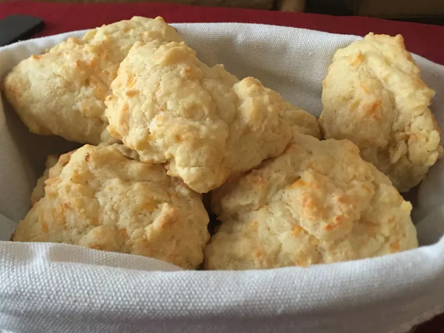

Biscuit recipe

Description
In this article I'll be showing you how to make
some Red Lobster copycat cheddar biscuits.
Ingredients:
- 2 cups all-purpose flour
- 1 cup shredded cheddar cheese
- 1 tablespoon baking powder
- 1 teaspoon salt
- 1/2 teaspoon garlic powder
- 1/3 cup butter, softened and cut into pieces
- 1 large egg
- 2 tablespoons butter, melted
- 2 teaspoons dried parsley (Optional)
- 1 teaspoon garlic powder (Optional)
Steps:
- Preheat the oven to 400 degrees F. Grease or line
a baking sheet with parchment paper.
- Stir flour, cheddar cheese, baking powder, salt, and
garlic powder together in a bowl.
- Stir milk, softened butter pieces, and egg together in
a seperate bowl. Add to the flour mixture and Stir
until just combined and chunky, being very careful
not to overmix.
- Drop batter by tablespoonfuls onto the prepped baking
sheet.
- Meanwhile, stir melted butter, parsley, and garlic powder
together in a small bowl. Remove biscuits from oven and
brush melted butter mixture on top.
- Return to oven and bake until golden brown.